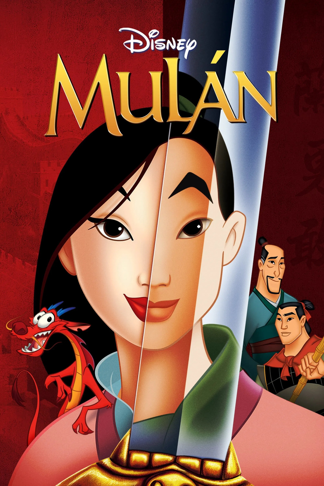
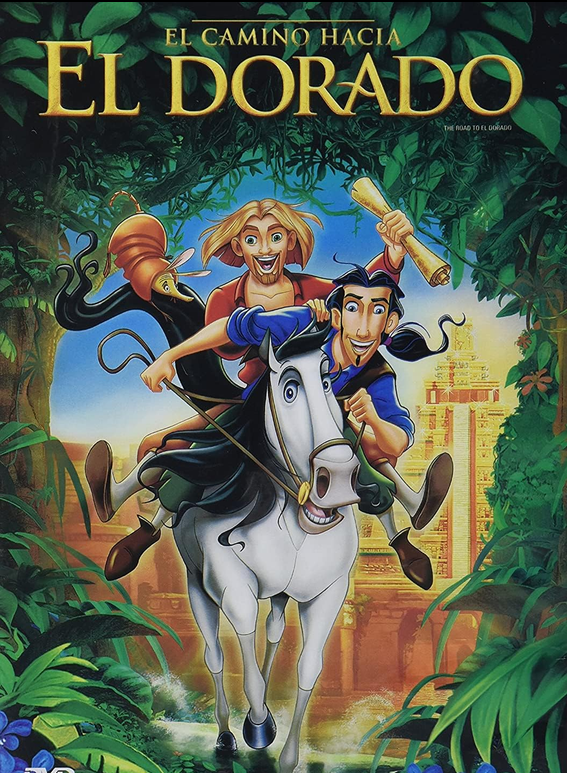

Ciudad: Buenos Aires, Argentina
Edad: 34 años
Desarrollador de Software
Ciudad: Buenos Aires, Argentina
Edad: 34 años

Dir. Tony Bancroft • Barry Cook
Una joven se hace pasar por soldado para salvar a su familia.
Wikipedia
Dir. Bibo Bergeron • Don PaulJeffrey • Katzenberg
Un joven explorador y su amigo descubren un reino mítico llamado El Dorado.
WikipediaDir. James McTeigue
En un futuro distópico, un hombre lucha contra un régimen opresivo.
Wikipedia"Si funciona, no se toca."